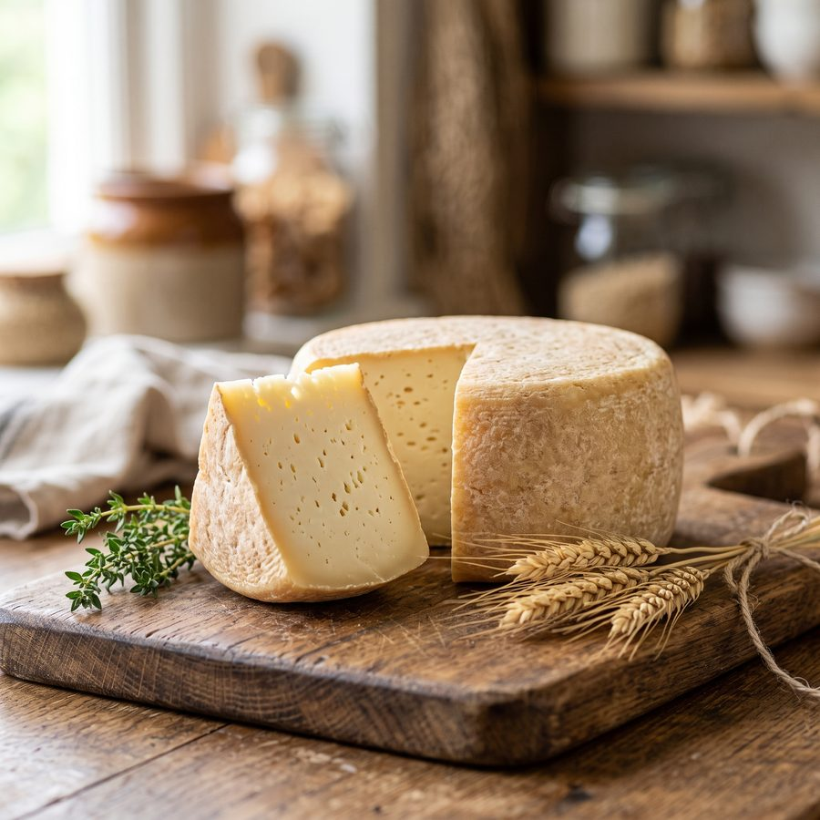
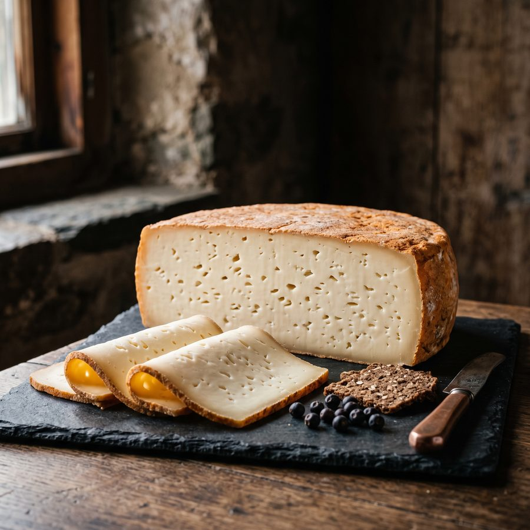
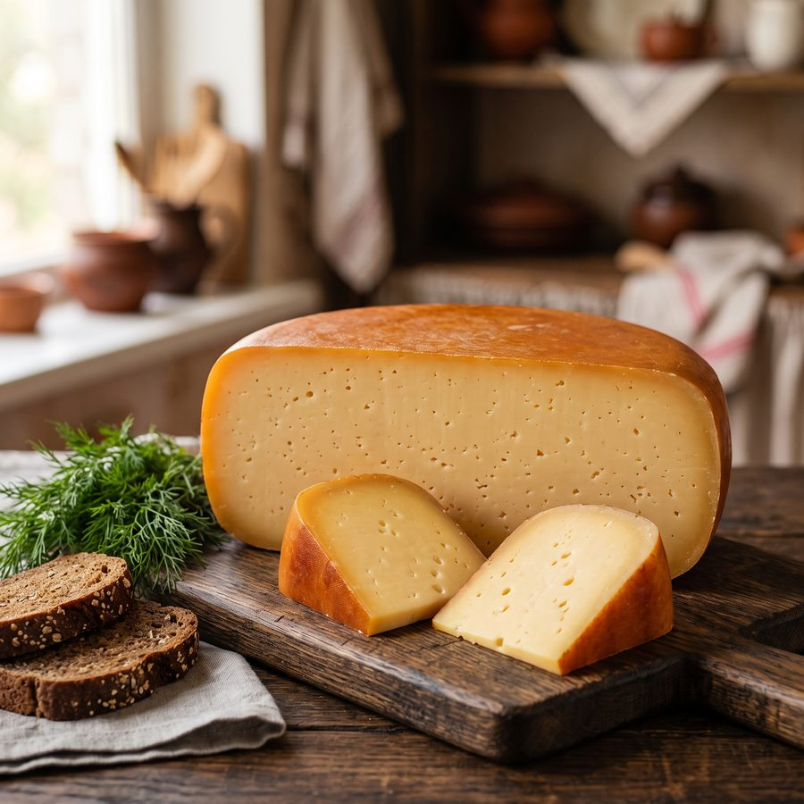
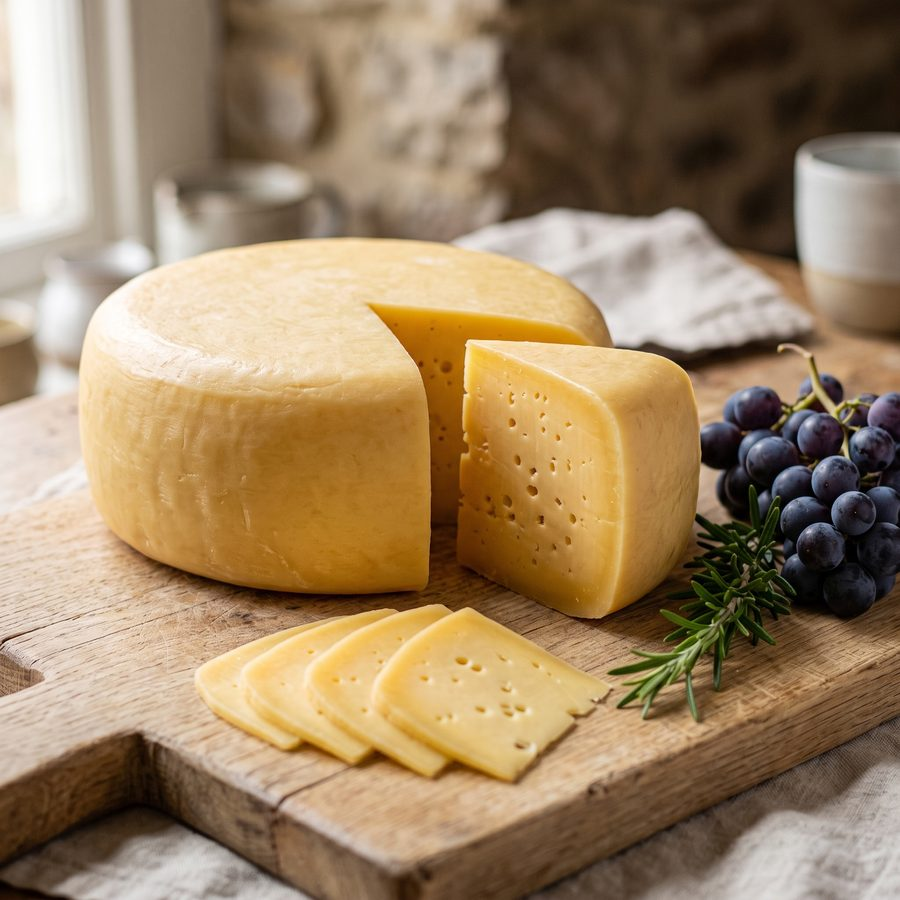
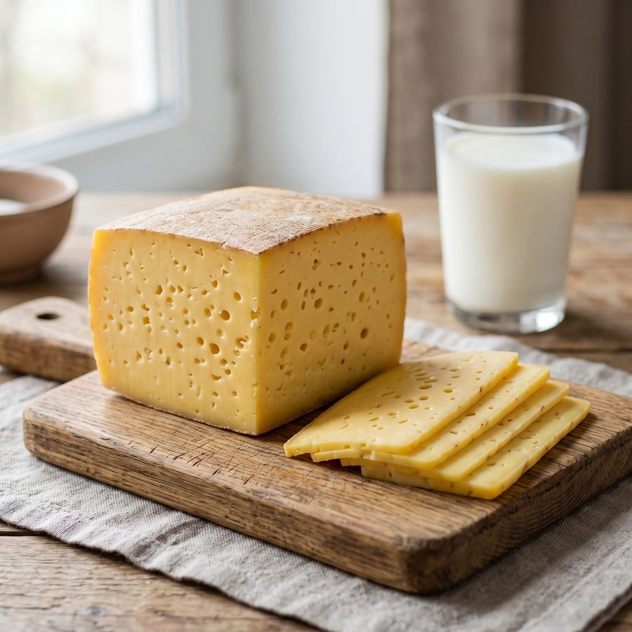
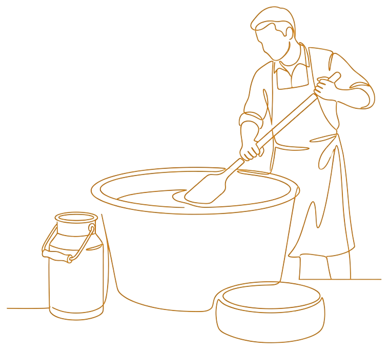
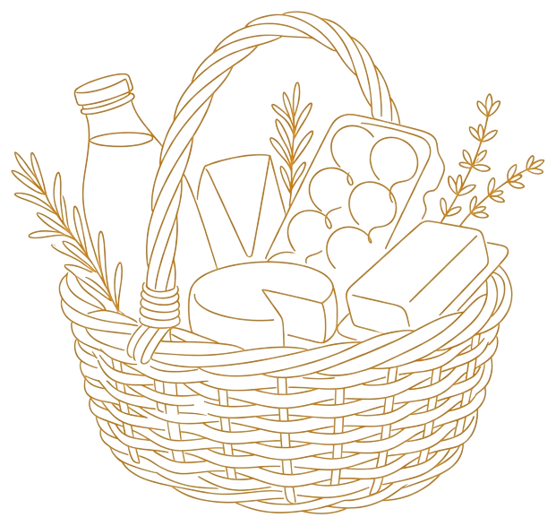

Сыр Степной
Плотный, чуть солоноватый, с ореховой ноткой в послевкусии.
2500 ₽ / кг
режем от 300 грамм
Небольшая семейная ферма в д. Покровка под Клином. Коровы на своём пастбище, куры и утки во дворе. Сыр варим сами и выдерживаем два-три месяца.
Четыре раздела — всё, что ферма делает сама. Ничего перекупленного и ничего привозного.
Пять сортов уже готовы: выдержка 2–3 месяца, цена одна — 2500 ₽ за килограмм. Режем от 300 грамм. Остальные головки пока зреют в погребе.

Плотный, чуть солоноватый, с ореховой ноткой в послевкусии.

Мягче остальных по характеру, с мелкими глазками и лёгкой сливочной кислинкой.

Сливочный, спокойный, без резкости — самый «домашний» из наших сортов.



Между дойкой и сыроварней у нас двести метров. Подоили, охладили, через час поставили на сыр — в такой короткой цепочке негде появиться лишнему.
Корма свои, стадо своё, выдержка своя. Спрашивать за качество не с кого, кроме себя.
Сыр не терпит спешки. Поэтому мы не торопим ни коров, ни погреб.
хозяйка фермы
Заказ собираем в день выезда: сыр режем перед отправкой, молоко наливаем утром. Ничего не лежит на складе и не ждёт покупателя неделями.
Доставка — Клин и 30 км вокруг, отдаём лично в руки. Оплата при получении, минимальный заказ 2500 ₽.

Начиналось с одной коровы и желания, чтобы дома на столе было настоящее. Сейчас у нас своё стадо, куры и утки, а к молоку добавилась сыроварня. Работаем семьёй: доим, варим, выдерживаем и сами же развозим заказы.
Мы не растём в объёмах ради объёмов. Сыра выходит столько, сколько успевает созреть, — зато за каждую головку не стыдно.


О выдержке, о молоке и о том, как обращаться с фермерским сыром дома.

Самый частый вопрос на ярмарке: «А чего так долго?» Рассказываем, что происходит с головкой всё это время и почему торопить её нельзя.
Читать дальше
От вымени до сыроварни у нас двести метров. Объясняем, почему это важнее любых слов про «натуральность».
Читать дальше
Фермерский сыр без плёнки и консервантов живёт по своим правилам. Четыре простых привычки — и кусок доедете до конца таким же, каким привезли.
Читать дальше